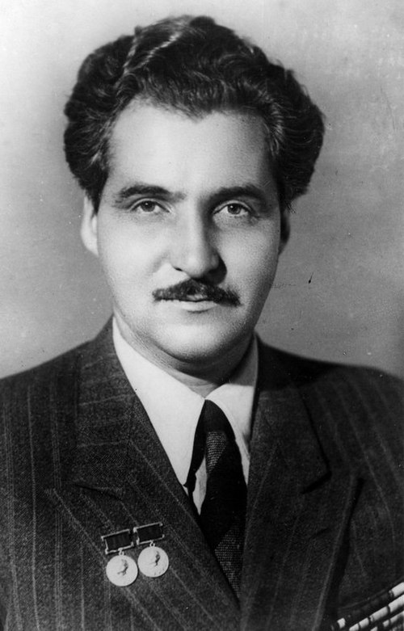

Кратко о герое
Константин Михайлович Симонов — советский писатель, поэт, драматург и журналист. Участник Великой Отечественной войны, был военным корреспондентом, чьи строки стали голосом фронта. Автор известных произведений: «Жди меня», «Судьба человека» и других.
Навыки и интересы
- Поэзия
- Проза
- Публицистика
- Фронтовая журналистика
- Исторические исследования
Контактная информация
Email: vov@mail.ru
Телефон: +7 (999) 123-45-67